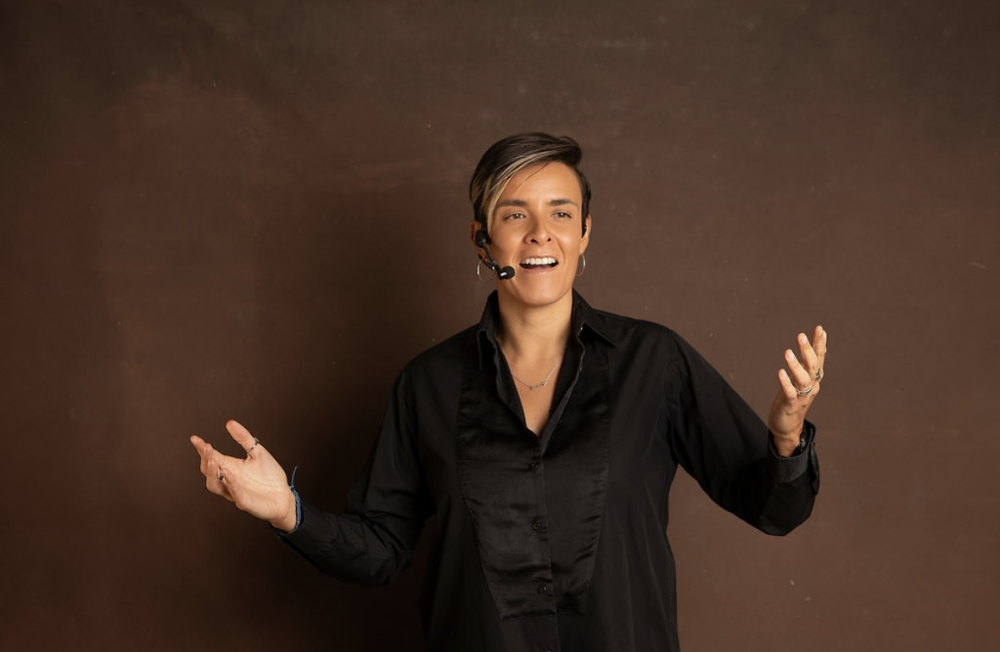
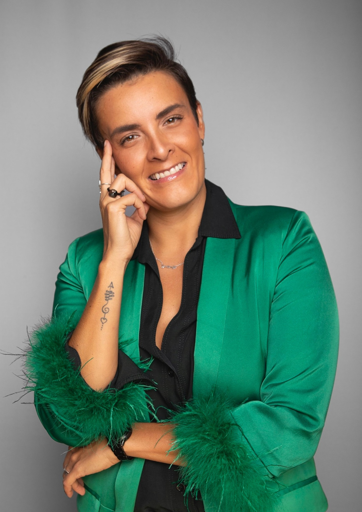

Ciencias de la Felicidad
La felicidad no es un premio que llega al final, es una capacidad que se entrena. Bienestar basado en evidencia para trabajar con más motivación y sentido.
Sobre mí
Conferencista internacional, coach y especialista en comportamiento humano y liderazgo. Desde hace más de 15 años acompaño a personas y organizaciones a cuestionar las ideas y los hábitos desde los que deciden, trabajan y lideran.


Mi historia
Mi pasión siempre ha sido comprender por qué las personas hacen lo que hacen y desde dónde toman sus decisiones. En estos 15 años he aprendido algo que guía todo mi trabajo:
La información cambia lo que una persona sabe. La transformación cambia lo que una persona cree sobre sí misma.
Por eso mi deseo es formar personas capaces de cuestionar todo aquello que durante años aceptaron como verdad. Mi visión es que dejen de depender del patrón que ha gobernado su vida, salgan del piloto automático y recuperen la capacidad de elegir quién quieren ser.
Hoy la inteligencia artificial está cambiando y acelerando todo lo que podemos hacer. El nuevo líder tiene que decidir qué hacer con esas herramientas, porque que la IA pueda hacerlo no significa que deba hacerlo.
Mi enfoque
Combino investigación, pensamiento crítico y herramientas prácticas que la gente puede usar al día siguiente.
La felicidad no es un premio que llega al final, es una capacidad que se entrena. Bienestar basado en evidencia para trabajar con más motivación y sentido.
Cómo el estado del cuerpo y las emociones influyen en la forma en que pensamos, decidimos y lideramos, para rendir bajo presión sin agotarse.
Mi metodología en cinco fases: Reconoce, Rompe, Reconfigura, Optimiza y Diseña tu Fórmula.
La pregunta que guía mi trabajo
¿Cómo desarrollamos la capacidad humana necesaria para seguir tomando buenas decisiones cuando las condiciones cambian?
En medios
Empresas con las que he trabajado
Cuéntame sobre tu evento y te confirmo disponibilidad con una propuesta a la medida.